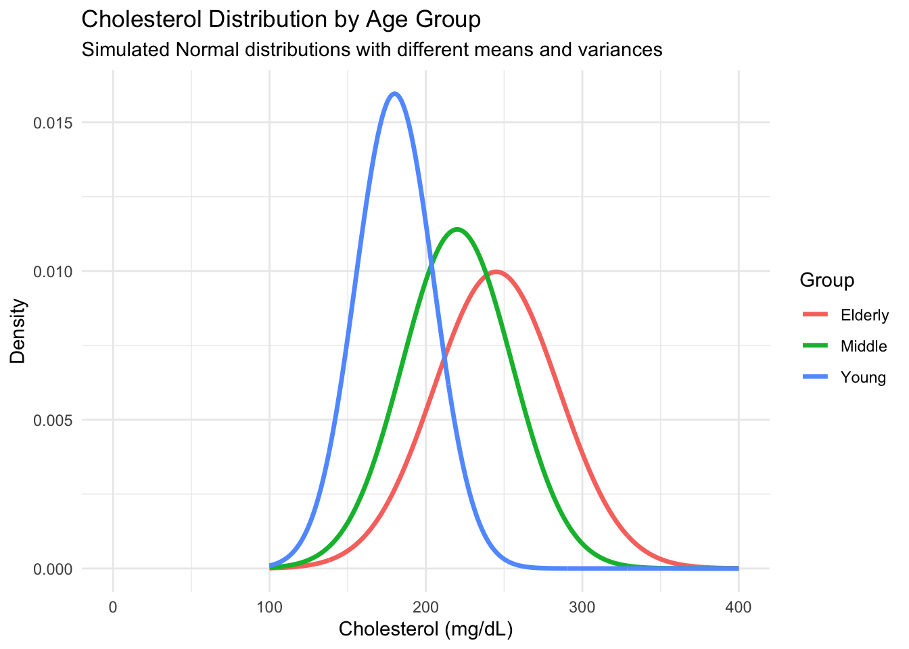
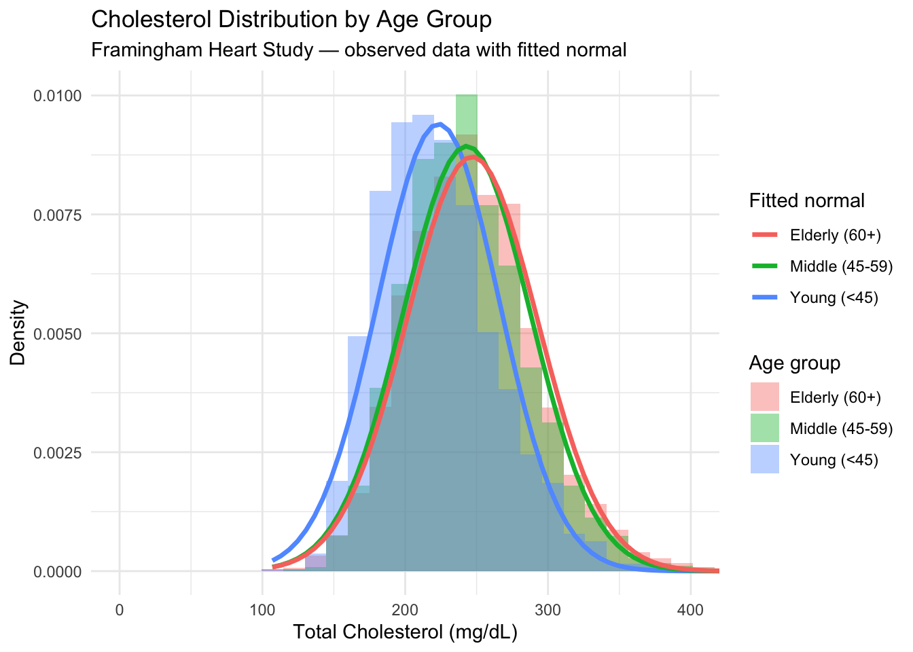
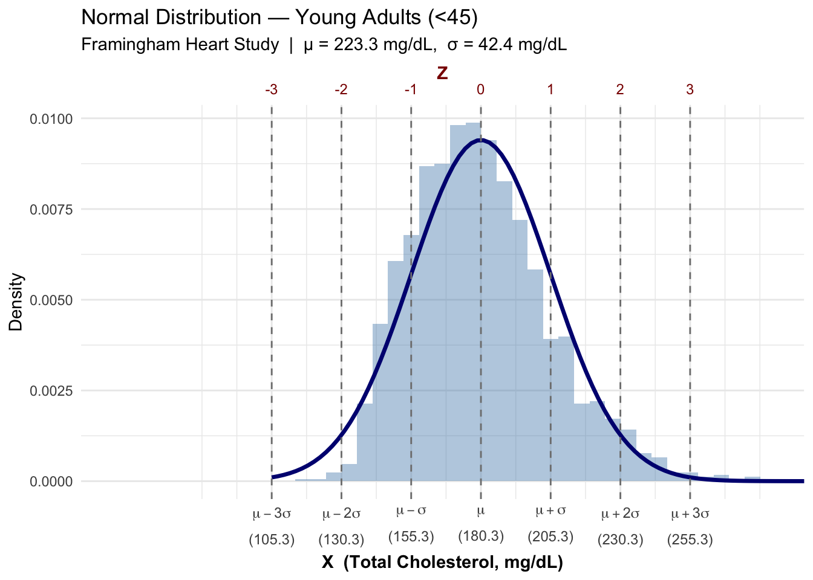
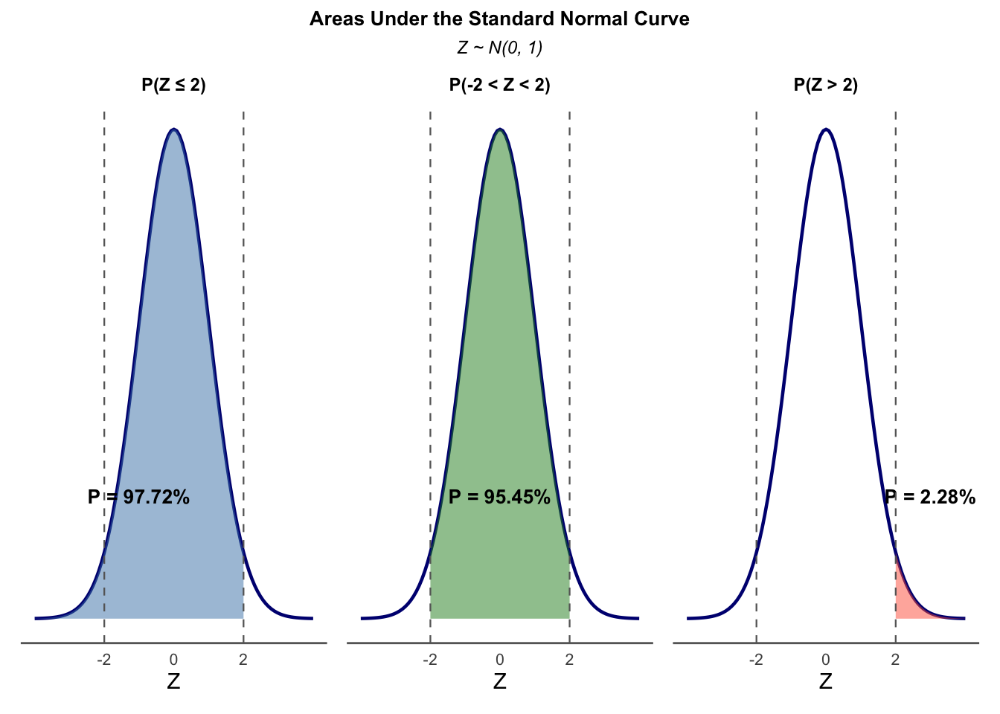

The normal distribution is commonly used in two ways: (1) as an approximation of the empirical distribution of the data, or (2) as a theoretical model for a data-generating process. It is actually a family of distributions defined by two parameters, \(\mu\) and \(\sigma^2\), representing the mean and the variance, and denoted as \(N(\mu, \sigma^2)\).
To illustrate this, consider the example below using simulated cholesterol data. Cholesterol is a natural choice for this illustration, as the relationship between cholesterol levels and the occurrence of heart disease has been one of the most extensively studied topics in epidemiology. We simulate the distribution of total cholesterol for three age groups: young (<45 years old), middle-aged adults (45-59), and older adults (60+), with mean and standard deviation values of (180, 25), (220, 35), and (245, 40) mg/dL,\(^1\) respectively. As the figure shows, while all three distributions share the same bell-shaped form, they differ in their center and spread — precisely what varying \(\mu\) and \(\sigma^2\) captures.
\(^1\) mg/dL stands for milligrams per deciliter, the standard unit for measuring substance concentration in blood tests. It indicates how many milligrams of cholesterol are present in one deciliter (100 ml) of blood.
# install.packages("multcomp")library(multcomp)set.seed(123)# Simulated Data: Family of normal distributions with different mean and sdx <-seq(100, 400, length.out =1000)df <-data.frame(x =rep(x, 3),group =rep(c("Young", "Middle", "Elderly"), each =1000),density =c(dnorm(x, mean =180, sd =25), # young: low mean, low variancednorm(x, mean =220, sd =35), # middle: mid mean, mid variancednorm(x, mean =245, sd =40) # elderly: high mean, high variance ))library(ggplot2)ggplot(df, aes(x = x, y = density, color = group)) +geom_line(linewidth =1.2) +coord_cartesian(xlim =c(0, 400)) +labs(title ="Cholesterol Distribution by Age Group",subtitle ="Simulated Normal distributions with different means and variances",x ="Cholesterol (mg/dL)",y ="Density",color ="Group" ) +theme_minimal()

We now examine the same distributions using real data from the Framingham Heart Study — one of the most famous and influential long-term epidemiological studies in medical history. The observed data confirm that cholesterol distributions differ across age groups, with a clear separation between young and older adults. However, the distinction between middle-aged and older adults is less pronounced than in our simulation, suggesting that the chosen parameter values either overstated the differences or better characterize a different population. The empirical distributions are represented by the shaded histograms, with fitted normal curves superimposed for each group. Their close agreement supports the normal distribution as a reasonable model for real cholesterol data — and motivates a broader point: the normal curve can describe an observed variable in two ways, either as a smooth approximation to a sample histogram, or as an idealized representation of the underlying population distribution. The curves in both figures are consistent with either interpretation. For simplicity, in this lecture we treat the normal curve as representing a population distribution.
# A tibble: 3 × 3
group mu sigma
<chr> <dbl> <dbl>
1 Elderly (60+) 247. 45.8
2 Middle (45-59) 243. 44.6
3 Young (<45) 223. 42.4

The previous two examples illustrate the characteristic “bell shape” of the normal distribution, also known as the Gaussian distribution in honor of Carl Friedrich Gauss, a prominent mathematician of the 18th century who formalized this distribution. It is widely regarded as the most important continuous probability distribution due to its symmetric, bell-shaped form and its frequent appearance in natural and social phenomena.
What are the exact roles of the parameters \(\mu\) and \(\sigma^2\)? As the previous examples show, there are many normal curves, each characterized by its mean and standard deviation. If a variable \(X\) follows a normal distribution with mean \(\mu\) and standard deviation \(\sigma\), we write \(X \sim N(\mu, \sigma^2)\). All normal curves share a common mathematical form — the density function is given by:
where \(f(x)\) in Equation 7.1 expresses the height of the curve at position \(x\), and \(e \approx 2.718\) and \(\pi \approx 3.1416\) are mathematical constants representing Euler’s number and pi, respectively.
The two parameters play distinct roles. The mean \(\mu\) governs the location of the curve — each normal curve is centered at \(x = \mu\). The standard deviation \(\sigma\) governs the shape — specifically, the width and height of the curve. Since the total area under any density curve must equal 1, a smaller \(\sigma\) produces a taller and narrower curve, reflecting greater concentration of values near the mean. Conversely, a larger \(\sigma\) produces a flatter and wider curve, indicating greater variability of \(X\) around the mean.
7.1.1 Area under the curve
A very important characteristic of density curves is that they can be quatitatively interpreted in terms of areas under the curve.
The Standardize Scale
Although the area under any density curve equals 1, normal distributions with different means and variances can be made directly comparable by rescaling the data — a process known as standardization. The standardized variable, denoted \(Z\), measures distance from the mean in units of standard deviations and is obtained by subtracting the mean from the original variable \(X\) and dividing by its standard deviation:
\[Z=\frac{X-\mu}{\sigma} \tag{7.2}\]
The resulting scale is called the standard normal distribution, with mean \(\mu = 0\) and standard deviation \(\sigma = 1\), denoted \(Z \sim N(0, 1)\).
The figure below illustrates this using cholesterol measurements for the young adult group (<45) from the Framingham Heart Study, where the estimated mean is \(\mu = 180.3\) mg/dL and standard deviation is \(\sigma = 25.0\) mg/dL. The bottom axis (X) shows the original cholesterol scale, with tick marks at the mean and at each standard deviation up to \(\pm 3\sigma\). The top axis (Z) shows the corresponding standardized scale, obtained by applying Equation 7.2. Note that standardization does not alter the shape of the distribution — the curve remains identical — but simply re-expresses the same values on a new scale where \(\mu = 0\) and \(\sigma = 1\). The two axes thus represent the same distribution in two equivalent scales, \(X\) and \(Z\), simultaneously.

In summary, the standardized variable \(Z\) follows a standard normal distribution with mean zero and standard deviation one, denoted \(Z \sim N(0,1)\). Statistical tables — found in virtually all introductory textbooks — and modern software provide areas under the standard normal curve as a function of \(Z\). Each entry represents the cumulative area to the left of a specified value \(z\), which in probability terms is written as:
\[P(X \leq x) \equiv P(Z \leq z)\]
To illustrate, consider the probability that a cholesterol value in the young adult group falls below 230.3 mg/dL — that is, within two standard deviations above the mean (\(Z \leq 2\)). In R this is computed as pnorm(2), yielding \(P(Z \leq 2) = 0.9772\), or 97.72% (see left panel below). The complementary probability — the area above that value — follows directly as:
or 2.28% (right panel). Finally, the area between two \(z\)-scores is obtained by subtraction. For the interval between 130.3 and 230.3 mg/dL, corresponding to \(P(-2 \leq Z \leq 2)\):
# Compute probabilities on Z scalep_below_2 <-pnorm(2)p_above_2 <-1-pnorm(2)p_within_2 <-pnorm(2) -pnorm(-2)cat("P(Z <= 2):", round(p_below_2, 4), "\n")
P(Z <= 2): 0.9772
cat("P(Z > 2):", round(p_above_2, 4), "\n")
P(Z > 2): 0.0228
cat("P(-2 < Z < 2):", round(p_within_2, 4), "\n")
P(-2 < Z < 2): 0.9545

This last result is a special case of the empirical rule, which states that in any normal distribution, approximately 68%, 95%, and 99.7% of observations fall within one, two, and three standard deviations of the mean, respectively — a result so fundamental it is sometimes called the 68-95-99.7 rule. This is illustrated in the figure below.